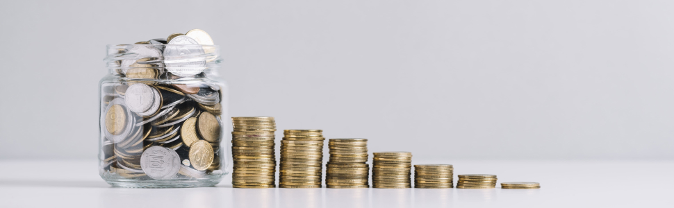

Больше половины россиян живет в кредит
Обсуждаем, зачем люди берут кредиты, портрет типичного заемщика и как быстрее расплатиться с долгами
По данным Центробанка, в 2020 году долг россиян перед банками вырос до 17 трлн ₽.
Согласно статистике, в среднем каждый экономически активный россиянин должен банкам 120 тыс ₽. В этой статье рассмотрим портрет среднестатистического заемщика и обсудим, кто и почему чаще всего обращается за кредитами, и как поскорее рассчитаться с долгами.
Содержание:
Портрет заемщика
Кредитная активность во многом определяется семейным и трудовым статусом человека. Активнее других берут кредиты семьи с детьми и матери-одиночки, а реже всего – неработающие пенсионеры. Долг перед банком есть у каждого третьего россиянина, причем 47% от общего числа всех займов принадлежит людям в возрасте 25-45 лет. Также эта группа является основным потребителем ипотечных займов – 70%.
Наличие кредитов практически не зависит от финансового статуса человека: заемщиком является примерно каждый третий представитель любой из доходных групп: от самых обеспеченных до самых нуждающихся.
Для каждого третьего россиянина, имеющего кредиты, сумма ежемесячных выплат по ним не превышает 10% семейного бюджета. Четверть заемщиков платят от 11 до 20%. Для 30% россиян, имеющих кредит, ежемесячные выплаты превышают треть ежемесячного семейного бюджета.
География кредитов
Чаще всего за кредитами обращаются жители Сибирского и Уральского федеральных округов: доля выплачивающих кредит или ипотеку составляет 43% и 38% соответственно (в целом по стране эта цифра составляет 32%).
Жители ЦФО реже обращаются в банки за кредитами — задолженность имеют всего 27%. Чаще всего здесь берут займ на ипотеку – 47% от общего объема кредитов против 37% в целом по стране.
А самое большое количество потребительских кредитов берут в Приволжском ФО — 70% от общего объема выдаваемых банками займов.
Информация о кредитах по федеральным округам, млн. ₽
| Федеральный округ | Объём | ||
|---|---|---|---|
| в рублях | в валюте | всего | |
| Центральный | 1 446 983 | 6 784 | 1 453 767 |
| Северо-Западный | 573 921 | 1 154 | 575 075 |
| Южный | 136 076 | 741 | 136 817 |
| Северо-Кавказский | 39 021 | 38 | 39 059 |
| Приволжский | 257 841 | 313 | 258 154 |
| Уральский | 145 782 | 82 | 145 864 |
| Сибирский | 178 225 | 98 | 178 323 |
| Дальневосточный | 82 732 | 68 | 82 800 |
| Итого: | 2 860 581 | 9 278 | 2 869 859 |
На что берут кредит
ЦБ – Центральный банк – организация, отвечающая за денежно-кредитную политику и обеспечение работы платёжной системы, делит все долги на два типа: ипотеку и потребительские кредиты. Ипотечные займы составляют 43%, доля потребительских кредитов – 57% от всей задолженности. В среднем заемщики отдают банку 26% своего дохода. Причем размер выплат за ипотеку и потребительский кредит примерно одинаков — 27% и 25% от дохода соответственно.
В январе 2018 года агентство Money Credit Research провело исследование и выяснило, на что россияне чаще всего берут ипотечные займы потребительские кредиты.
Кто чаще не платит вовремя
По данным ЦБ средняя величина просроченной задолженности составила 13,3 тыс ₽ (годом ранее – 14,4 тыс ₽). На данный момент просроченная задолженность составляет 748,6 млрд ₽ или 14,6% от всей задолженности. Объем просроченной задолженности за год вырос сократился на 7,7% по сравнению с аналогичным показателем на 1 июля 2019 г.
Показатель продолжает снижаться, что указывает на повышение уровня финансовой ответственности со стороны граждан и на снижение количества кредитов, по которым заемщики не могут вернуть долг.
Просроченная задолженность по кредитам, млн ₽
| Федеральный округ | |||
|---|---|---|---|
| Центральный | 28 099 | 27 219 | 26 943 |
| Северо-Западный | 6 360 | 6 100 | 5 831 |
| Южный | 5 431 | 5 190 | 4 835 |
| Северо-Кавказский | 2 965 | 2 483 | 2 102 |
| Приволжский | 10 837 | 10 439 | 10 292 |
| Уральский | 7 439 | 7 124 | 6 951 |
| Сибирский | 9 031 | 8 956 | 8 451 |
Самыми ответственными заемщиками являются семейные полные пары с двумя и более детьми, а также пенсионеры. А среднестатистический должник в России — это мужчина или женщина в разводе в возрасте 30–45 лет, со средним специальным образованием.
На что тратят деньги россияне
Как выплатить кредиты
Если ваш платеж по кредиту составляет 20% и более от общего заработка, то вы находитесь в группе риска. Несмотря на то, что сейчас вам, возможно, нетрудно выплачивать задолженность, вы не застрахованы от ситуаций, когда выплачивать кредит будет нечем. Что будет, если вы заболеете или лишитесь работы?
Необходимо пересмотреть свою кредитную нагрузку, оптимизировать платежи и снизить переплату.
Что делать?
- Экономия
- Ведите бюджет
- Рассчитайте и записывайте все расходы
- Уберите ненужные траты
- Приоритетность кредитов (если их несколько)
- Составьте рейтинг своих кредитов по проценту ставки
- Рассчитайте, какой кредит выгоднее закрыть первым
- Досрочным платежем закрывайте кредит
- Планирование платежей
- Составьте табличку и посчитайте экономию при досрочных платежах
- Воспользуйтесь нашим калькулятором
При составлении таблицы воспользуйтесь формулой расчета ежемесячного платежа:
(P x (1 + P)k) / ((1 + P)k - 1)
- P
- – месячная процентная ставка
- k
- – количество платежей
Просроченные платежи по кредиту
Просроченные платежи – это плохо, особенно если вы не платите банку уже давно. Такой долг испортит кредитную историю, и вы вряд ли сможете когда-то получить другой кредит. А еще банк может в любой момент подать на вас в суд или продать долг коллекторам.
Но если вдруг с вами произошла такая ситуация, следуйте нашей инструкции, постарайтесь договориться с банком и как можно раньше погасить долг.
Что делать, если просрочили платежи по кредиту
- На сайте ФССПУ проверьте, что по кредиту не возбуждено исполнительное производство
- Запросите свою кредитную историю в БКИ. Так вы узнаете, кому принадлежит долг и какого он размера.
- Позвоните в банк и скажите, что решили выплатить кредит. Банк может пойти навстречу.
- Пока платите, проверяйте кредитную историю, убедитесь, что банк вовремя сообщает в БКИ, что вы гасите долг.
- Погасив кредит, попросите в банке справку об отсутствии задолженности.